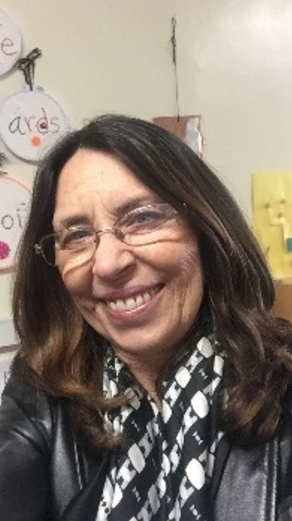

About Us
Our Mission
We protect, nurture and educate the abandoned and orphaned children in Senegal, empowering these young lives for the benefit of future generations.
Become a partner and donate today.
Our Story
Hawa Kader Gaye Dia, our founder and executive director, was first made aware of the significant plight of talibé children in 2010 when her family was on their first pilgrimage to Mecca. Her family’s guide was Ibrahim Cisse’s son who was a student at the time. Several years later in 2015 a news headline caught Hawa’s eye that called her to action: “Big Fire Where Talibés Sleep”. Nine children, ages 6-10, had lost their lives that day.
Hawa knew immediately that she could not stand by and watch another Senegalese child be hurt. She was called to act upon what she has always believed is her life’s mission: to reach out and make a real difference in the lives of these poor children. She strives to give the talibé children a healthy start to life, giving them the opportunity to learn, and protecting them from harm.
Our Team
HAWA KADER GAYE DIA: FOUNDER AND EXECUTIVE DIRECTOR
Hawa grew up in Senegal, West Africa, and moved to the USA in 1991 where she attended the University of the District of Columbia and earned her Bachelor’s Degree in Business Management. Hawa also completed advanced degree work in Education, Psychology and School Directorship. Her decades of experience as a teacher sparked a powerful and passionate vision to provide a better life for less fortunate children in Senegal, especially those born with Sickle Cell Anemia. She founded Mathurin Children’s Foundation to educate the world about the challenges these children face and to provide resources that can make a profound difference in their lives. The foundation is named for Hawa’s beloved cousin Mathurin who died of Sickle Cell Anemia at the age of five.
SHIVANI CANCIENNE: DIRECTOR OF OPERATIONS AND DEVELOPMENT

Shivani was born and raised in Northern California and she earned her bachelor’s degree in Education at Chaminade University in Honolulu. Her joy and love for teaching children has spanned over forty years and is still going strong. A skilled administrator, Shivani served as human resources manager for an international nonprofit. Shivani is also trained in mediation and conflict resolution with an emphasis on mindfulness. She dreamed of one day being part of an organization that helps children in need in Africa. After meeting Hawa and learning about her mission and foundation she now has the opportunity to see her dream come true.
HEYJIN LEE – SECRETARY
Heyjin moved to the USA from Seoul, South Korea in 1994 and earned her bachelor’s degree in Education at the University of the Nations in Kona, HI. Her decades of teaching experience and her love for children drive her passion for charitable work. Heyjin is committed to make the world a better place by helping disadvantaged children improve their lives. She is currently Director of Growing Light Montessori School in Oakland, California. She is very grateful for the opportunity to work with wonderful colleagues who share a common vision of health, education and opportunity for the children of Senegal.
REBECCA SCALF – BOARD MEMBER
Rebecca is the daughter and granddaughter of teachers. After graduating with a BA in Film Studies, she joined the family trade, teaching children ages 4 through 12 since 1994. She has volunteered as an Exhibit Guide at Chabot Space and Science Center, and currently directs a volunteer-run summer day camp for the Community Camps of the Girl Scouts of Northern California and serves as Program Support Manager with the Girl Scouts of Oakland. For Rebecca, crafting is the best way to relax and creatively unwind; to help others enjoy their creativity she has taught classes in knitting, crochet and the batik art of decorating Ukrainian eggs. She lives in Oakland with her husband and two cats.